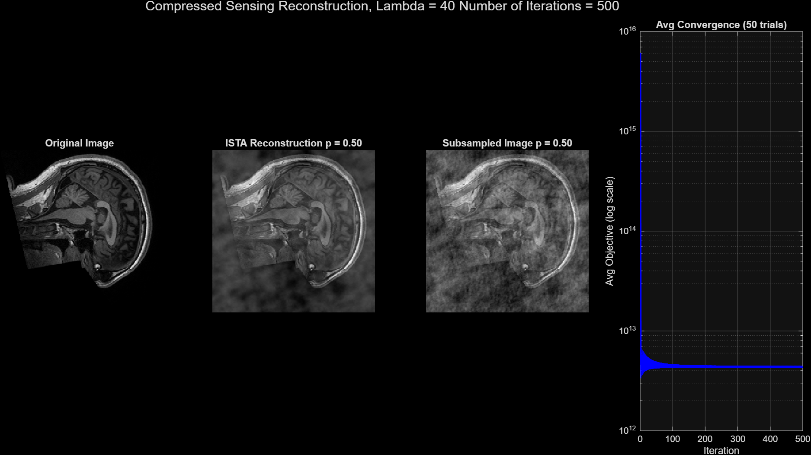

Projects
A collection of academic coursework, professional installations, and engineering projects. Click any project card to view details.
CooperLink
May 2026Fullstack mentoring platform connecting Cooper Union students with alumni mentors, career advice, and professional networks.

MRI Compressed Sensing Reconstruction
May 2026Advanced MRI reconstruction modeling in MATLAB leveraging compressed sensing algorithms and multilevel wavelets.
Real-Time ASCII Video Renderer (Video2ASCII)
December 2025Real-time rendering engine that translates webcam streams and local video files into colorized or grayscale ASCII output.
FIFO Library
November 2025A thread-safe concurrent queue library in C implementing custom spin lock-based semaphores for synchronization.
Homemade Linux Shell
October 2025A custom Unix-like command parser supporting shell scripting, pipeline filtering, and job execution control.
MOSFET Amplifier
May 2025Simulated and physical prototyping of an electrical MOSFET transistor amplifier conforming to lab guidelines.
AI-Chatbot for The Conference Board (AskTCB)
April 2025An AI enterprise chatbot utilizing RAG pipelines, Bing Search APIs, and Azure OpenAI model endpoints.
Multi-Threaded Port Scanner
February 2025High-speed network security port scanner executing concurrent parallel checks via Python multithreading queues.

Physics with Python
December 2024Physics simulations plotting Thomas Young's light interference and wave diffraction experiments.

Theremin
December 2024Designed and calibrated circuit oscillators on breadboards to fabricate a pitch and volume-controlled Theremin.
Game Portfolio
May 2024A suite of course projects including SOS (C terminal engine), Uno (Python logic), and Wheel of Fortune (Python solver).

Network Diagram
July 2023Enterprise network visual topology modeling documenting client network nodes, routers, and configurations.